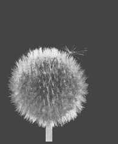
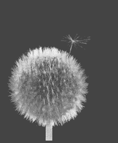
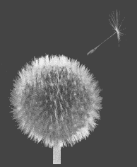
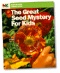

| |
Dandelion |
|
 |
 |
 |
Looking for interesting connections to air? See the Air cluster for experiments, books, ideas and activities.

|
|
|
Make your own parachute

The Great Seed Mystery For Kids
What seeds are these?
 Gathered by topic |
 Connected together |
 Index of ideas |
 Search |